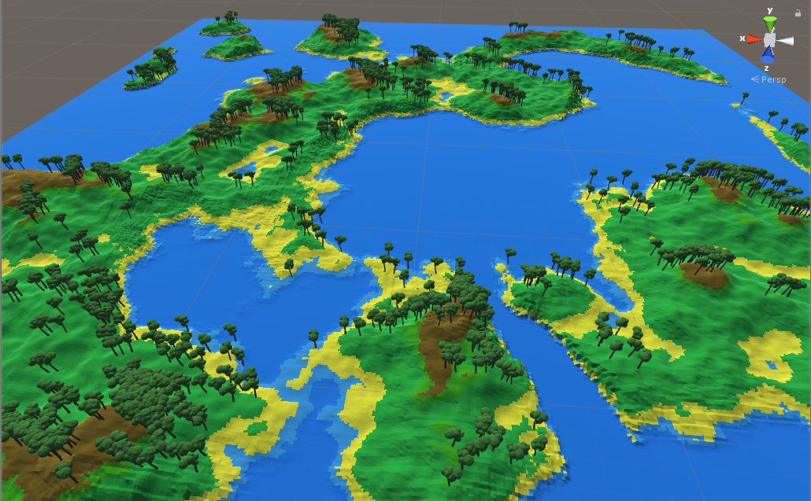
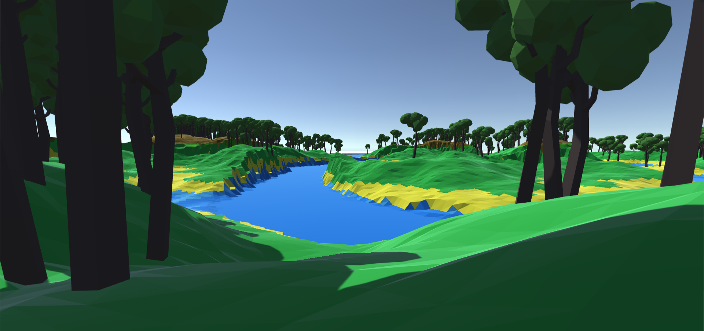
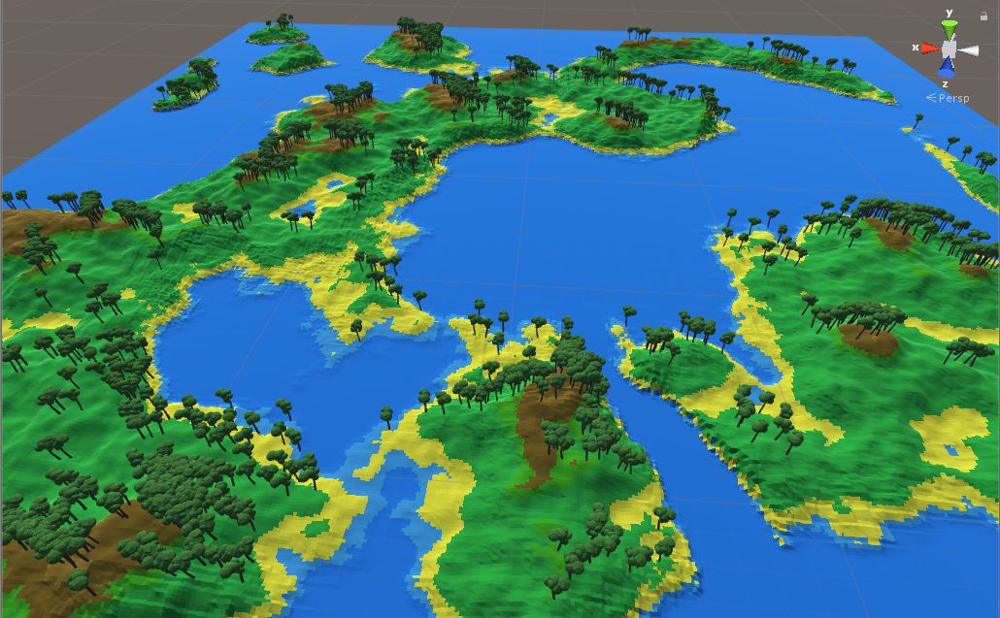
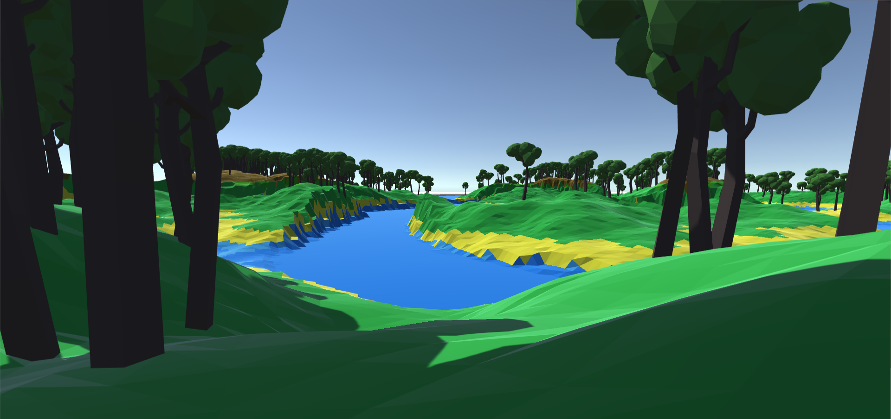

Curriculum Vitae
- Paulius Vizbara
- Telefonas: +37068572443
- El.paštas: paulius1207@gmail.com
Trumpai apie mane: Šiuo metų studijuoju KTU, programų sistemose, I-ame kurse. Esu baigęs JKM C++ kursus. Programavimu užsiemu ir laisvalaikiu.
Web
html/PHP
Šį puslapį dariau stodamas į NFQ akademiją. Tačiau jo tikrinimo metu nepavyko prisijungti prie mySQL serverio, kadangi hosting'as buvo ant mano kompiuterio, kuris būtent tuo metu užstrigo...
p5
p5 - tai JavaScript biblioteka, skirta grafiniam darbui internetinėse svetainėse. Žemiau - porą mano išbandytų dalykų.
Unity
Cradle of humankind
Dabartinis mano Unity projektas. Žaidimo įdėja - atsitiktinai generuojamas pasaulis, augalai, gyvūnai ir žmonių gyvenvietės, kurių vystymąsi žaidėjas gali stebėti ir jiems padėti (arba pakenkti). Dabartinė stadija yra tiktais Perlin triukšmo pagrindu generuojama žemė ir medžiai.
 



Programavimas
C++
C++ pradėjau programuoti nuo 9 klasės. Be mokyklos dar programavau CodinGame ir ProjectEuler uždavinius. Geriausias užbaigtas projektas - JKM baigimo darbas „Battle of Montagne“.
.NET
C# programuot pradėjau įstojęs į universitetą. Geriausias darbas - paskutinis LD: per ASP.NET padarytas puslapis.
Nuoroda projekto atsisiuntimui